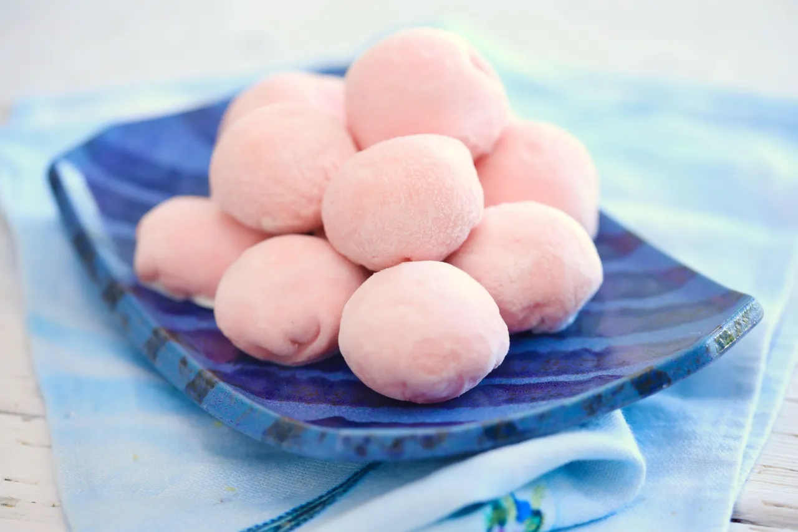

Mochi Ice Cream Recipe

Description
Mochi is a traditional Japanese rice cake, specifically made from "mochigome" variant of said rice. This type of grain is used mainly because of how sticky it becomes when cooked, which gives mochi its singnature texture.
In this recipe, however, mochi is used as a "casing" of sorts, which surrounds your ice cream of choice.
Ingredients
- sweet rice flour
- ice cream
- food coloring (optional)
Additional equipment
- measuring cups
- small tray
- parchment paper and plastic wrap
- ice cream scoop or spoon
- microwave safe bowl
- rubber spatula
Steps
Everything ready? Let's begin!
- Using a small ice cream scoop or a spoon, scoop 12 scoops of ice cream, they should be about the size of 2 tablespoons, and place them on a parchment paper-lined tray. Pop this tray into the freezer.
- Combine the sweet rice flour, sugar, and water in a large microwave-safe bowl and cover with plastic wrap. Microwave for 1 minute.
- Stir the rice flour mixture with a whisk to get rid of any lumps, then recover with plastic wrap and microwave again for 1 minute.
- Dip a rubber spatula in water and stir the rice mixture again. Don't use your whisk this time, as the dough will now be very sticky.
- Cover the mixture one last time and microwave for another 30 seconds. (Stir in your food dye here, if you are using.)
- Place a large piece of parchment paper on your counter and cover it with a generous dusting of cornstarch (or potato starch).
- With a wet spatula, scrape the dough out of the bowl and onto the cornstarch. Dust the top of the dough with more cornstarch.
- Roll the dough into a rectangle shape, no less than 1/4-inch thick. Make sure you keep dusting the top and bottom of the dough with cornstarch to prevent any sticking.
- Once rolled out, place the parchment paper on a cookie sheet and into your refrigerator to set. This will take around 30 minutes.
- After the dough has set, cut circles of the dough using a 3 ¾ inch (9½ cm) cutter. If you don't have a cookie or biscuit cutter, use an empty tin can or drinking glass.
- Pick up one circle of dough and brush off any excess cornstarch. Now, working quickly, take one scoop of ice cream from the freezer and place it in the center of the circle. Press the dough's edges around the scoop of ice cream, forming a ball, and squeeze to seal.
- To help preserve its shape, wrap the mochi ice cream ball in cling wrap and place them seam side down back in the freezer to set. Repeat with the remaining circles of dough and ice cream balls.
- Allow the mochi to freeze for a minimum of 2 hours.
- When ready to eat, let the mochi ice cream sit for a few minutes to soften.